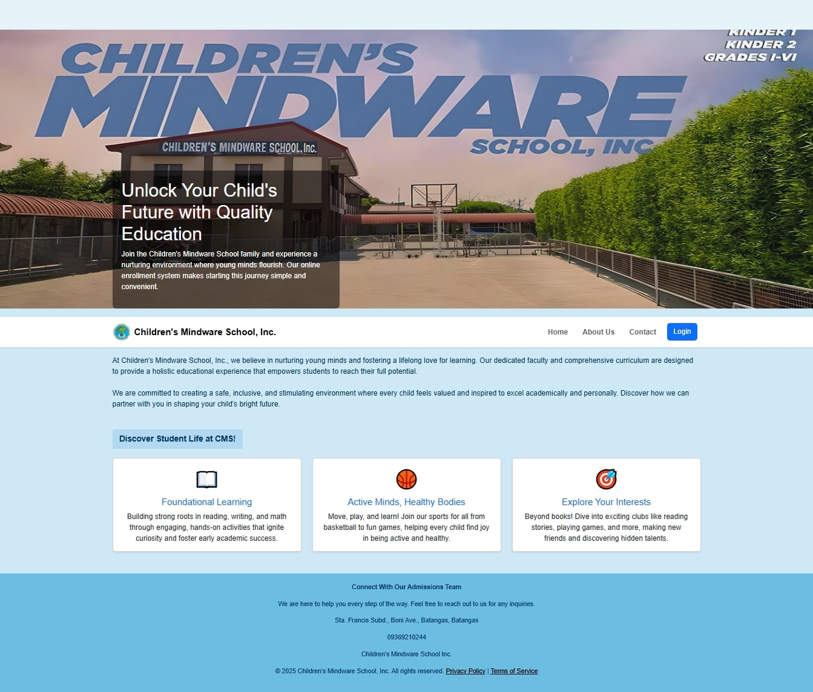

WEB SYSTEMPROJECT 01
Mind-SYS
Student Information and Records Management
As lead programmer, I built a centralized student information and records management system for Children’s Mindware Inc. The system streamlines student enrollment, profile management, and record retrieval through PHP (Laravel), MySQL, Bootstrap, HTML5, CSS3, and JavaScript.
HTML5CSS3BootstrapJavaScriptPHP (Laravel)MySQL